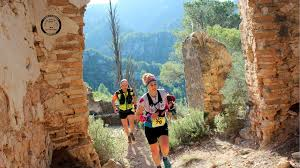
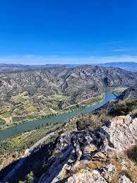
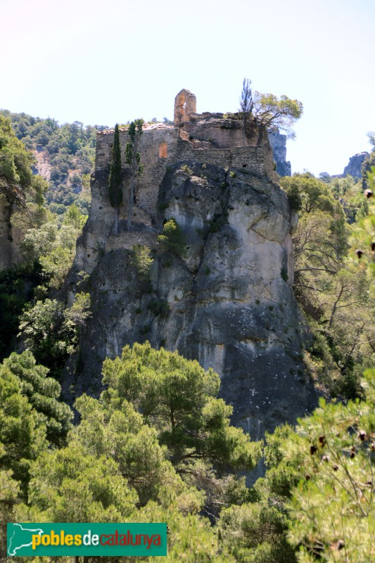
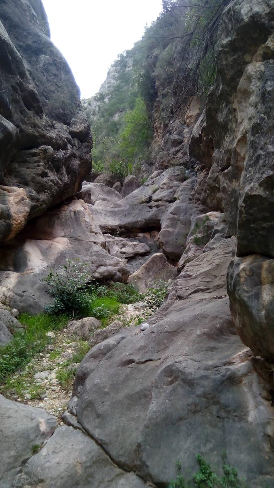
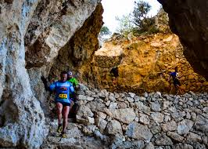
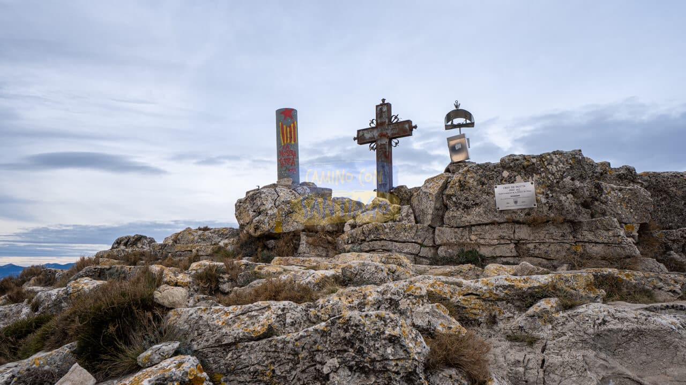
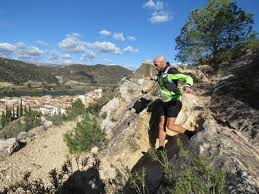

Itineraris disponibles
Les rutes combinen trams forestals, zones de carena, punts panoràmics i espais patrimonials vinculats al conjunt de Cardó.

El Pastisset
DifícilDistància: 25,37 km
Durada: 4 h
Desnivell: 1333 m
Ruta llarga i exigent que travessa bona part de l’entorn muntanyós de Cardó. Recomanada per a persones amb experiència i bona preparació física.
Veure al mapa
Lo Carmull
DifícilDistància: 5,26 km
Durada: 1 h 15 min
Desnivell: 345 m
Itinerari curt però intens, amb pujada marcada cap a una zona elevada. Ideal per observar el paisatge de la serra en poc temps.
Veure al mapa
Ruta de les Ermites
MitjanaDistància: 7,74 km
Durada: 2 h
Desnivell: 407 m
Ruta centrada en el patrimoni històric de Cardó, amb diverses ermites integrades en un entorn natural abrupte i singular.
Veure al mapa
Barranc del Mas
FàcilDistància: 8,10 km
Durada: 1 h 30 min
Desnivell: 257 m
Recorregut assequible per una zona de barranc i camins forestals. Bona opció per iniciar-se en el paisatge de la Serra de Cardó.
Veure al mapa
La Planeta
FàcilDistància: 12,83 km
Durada: 3 h
Desnivell: 406 m
Ruta de distància moderada que permet recórrer diferents sectors de la serra sense grans dificultats tècniques.
Veure al mapa
Creu de Santos
MitjanaDistància: 6,66 km
Durada: 1 h 30 min
Desnivell: 488 m
Ascens cap al cim més emblemàtic de la Serra de Cardó. Des de la Creu de Santos s’obtenen vistes àmplies del territori ebrenc.
Veure al mapa
Culla
DifícilDistància: 17,53 km
Durada: 3 h
Desnivell: 802 m
Versió més curta però exigent del recorregut Pastisset, amb forts desnivells i trams de muntanya ideals per a senderistes avançats.
Veure al mapa